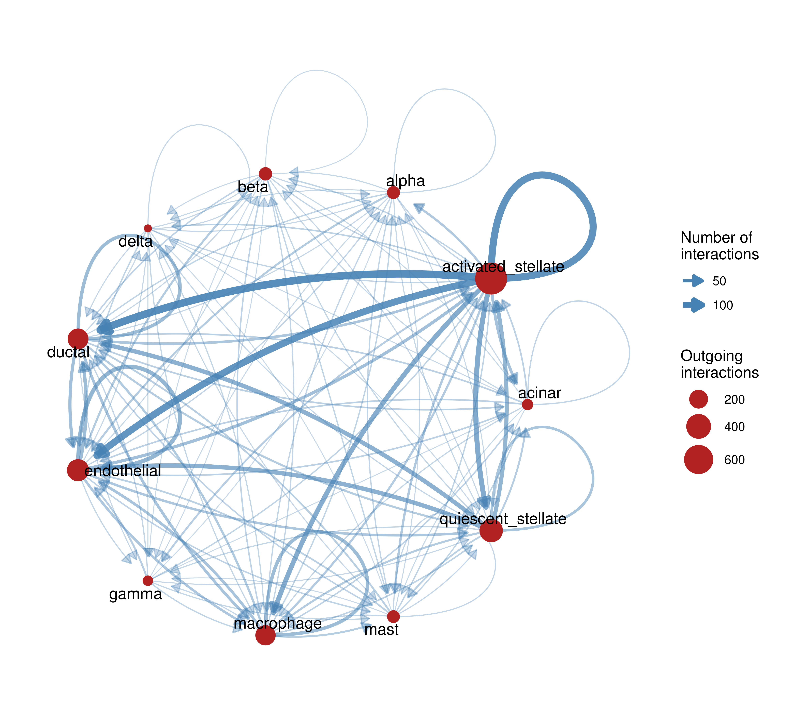

library(here)
library(GraphExperiment)
library(scRNAseq)
library(scuttle)
library(liana)
library(tidyverse)
library(ggraph)
set.seed(123) # for reproducibility5 Use case 5: cell-cell communication networks
Cell-cell communication (CCC) is commonly inferred from scRNA-seq data based on the expression of ligands in sender cell types and their receptors in receiver cell types. The result is naturally represented as a directed graph of cell types. Here, we will use GraphExperiment to store CCC networks in the colGraphs slot of an object containing pseudobulk expression profiles (i.e., with cell types in columns). This use case demonstrates that observation-level graphs can be stored at any resolution, including cells (see use case 4), cell types, samples, or species (see use cases 6 and 7).
We will infer CCC with LIANA (Dimitrov et al. 2022), a framework that runs multiple CCC inference methods and combines their results into a consensus ranking of ligand-receptor interactions. We chose LIANA because a systematic comparison of CCC methods showed that no single method consistently outperformed the others, and that the choice of method strongly affects predictions (Dimitrov et al. 2022), making a consensus approach a sensible default. Other tools, such as NicheNet (Browaeys et al. 2019), address a complementary question (i.e., which ligands best explain gene expression changes in receiver cells), and their output (ligand-target gene links) could be stored in rowGraphs. We will use scRNA-seq data of human pancreatic islets from Baron et al. (2016), available in the scRNAseq package (Risso and Cole 2025).
5.1 Data description and processing
We will first load the data and, to keep this example lightweight, randomly sample up to 100 cells per cell type, keeping only cell types with at least 20 cells.
# Load data
sce <- BaronPancreasData("human")
sceclass: SingleCellExperiment
dim: 20125 8569
metadata(0):
assays(1): counts
rownames(20125): A1BG A1CF ... ZZZ3 pk
rowData names(0):
colnames(8569): human1_lib1.final_cell_0001 human1_lib1.final_cell_0002
... human4_lib3.final_cell_0700 human4_lib3.final_cell_0701
colData names(2): donor labelreducedDimNames(0):
mainExpName: NULLaltExpNames(0):# Check annotated cell types
table(sce$label)
acinar activated_stellate alpha beta
958 284 2326 2525
delta ductal endothelial epsilon
601 1077 252 18
gamma macrophage mast quiescent_stellate
255 55 25 173
schwann t_cell
13 7 # Sample up to 100 cells per cell type
idx <- split(seq_len(ncol(sce)), sce$label)
idx <- unlist(lapply(idx, function(i) if(length(i) > 100) sample(i, 100) else i))
sce <- sce[, sort(idx)]
# Keep only cell types with at least 20 cells
sce <- sce[, sce$label %in% names(which(table(sce$label) >= 20))]
table(sce$label)
acinar activated_stellate alpha beta
100 100 100 100
delta ductal endothelial gamma
100 100 100 100
macrophage mast quiescent_stellate
55 25 100 # Normalize data
sce <- logNormCounts(sce)
sceclass: SingleCellExperiment
dim: 20125 980
metadata(0):
assays(2): counts logcounts
rownames(20125): A1BG A1CF ... ZZZ3 pk
rowData names(0):
colnames(980): human1_lib1.final_cell_0016 human1_lib1.final_cell_0028
... human4_lib3.final_cell_0683 human4_lib3.final_cell_0697
colData names(3): donor label sizeFactorreducedDimNames(0):
mainExpName: NULLaltExpNames(0):5.2 Inferring cell-cell communication
To reduce memory usage, we will only keep genes encoding ligands and receptors in LIANA’s consensus resource. Then, we will infer CCC with four methods (NATMI, Connectome, log2FC, and SingleCellSignalR), and aggregate their results into a consensus ranking.
# Keep only genes in the ligand-receptor resource
lr_resource <- select_resource("Consensus")[["Consensus"]]
lr_genes <- unique(unlist(strsplit(
c(lr_resource$source_genesymbol, lr_resource$target_genesymbol), "_"
)))
sce_lr <- sce[rownames(sce) %in% lr_genes, ]
# Infer CCC with multiple methods and aggregate results
liana_res <- liana_wrap(
sce_lr, idents_col = "label", resource = "Consensus",
method = c("natmi", "connectome", "logfc", "sca"), verbose = FALSE
)
liana_agg <- liana_aggregate(liana_res, verbose = FALSE)
head(liana_agg)# A tibble: 6 × 14
source target ligand.complex receptor.complex aggregate_rank mean_rank
<chr> <chr> <chr> <chr> <dbl> <dbl>
1 activated_ste… endot… COL1A2 CD93 7.59e-10 50.8
2 activated_ste… endot… COL1A1 CD93 9.72e-10 38.2
3 alpha mast GCG ADRB2 1.46e- 8 74.8
4 endothelial endot… COL4A1 CD93 3.39e- 8 168
5 activated_ste… endot… MMP2 PECAM1 3.74e- 8 119
6 alpha endot… GCG RAMP2 4.11e- 8 94.5
# ℹ 8 more variables: natmi.edge_specificity <dbl>, natmi.rank <dbl>,
# connectome.weight_sc <dbl>, connectome.rank <dbl>, logfc.logfc_comb <dbl>,
# logfc.rank <dbl>, sca.LRscore <dbl>, sca.rank <dbl>We will keep interactions with aggregate rank < 0.01 and create a directed graph of cell types in which edges point from sender to receiver cell types, edge weights represent the number of interactions, and edge attributes include the ligand-receptor pairs. Self-loops represent autocrine signaling.
# Filter interactions and summarize by sender/receiver pairs
ccc_edges <- liana_agg |>
filter(aggregate_rank < 0.01) |>
mutate(lr_pair = paste0(ligand.complex, "->", receptor.complex)) |>
group_by(source, target) |>
summarise(
weight = n(),
lr_pairs = paste(lr_pair, collapse = ";"),
.groups = "drop"
)
head(ccc_edges)# A tibble: 6 × 4
source target weight lr_pairs
<chr> <chr> <int> <chr>
1 acinar acinar 9 PRSS2->PARD3;PRSS1->PARD3;PRSS3->PARD3;LAMB3…
2 acinar activated_stellate 16 PRSS2->F2R;PRSS1->F2R;PRSS3->F2R;PRSS1->F2RL…
3 acinar beta 3 PRSS2->PARD3;PRSS1->PARD3;PRSS3->PARD3
4 acinar ductal 17 PRSS2->PARD3;SPINK1->EGFR;PRSS1->F2RL1;PRSS3…
5 acinar endothelial 16 PRSS2->F2R;CEL->CXCR4;PRSS1->F2R;ANXA2->ROBO…
6 acinar macrophage 7 ALB->B2M_FCGRT;LCN2->FCGR2A;PLTP->ABCA1;RPS1…5.3 Storing pseudobulk data and CCC networks in a GraphExperiment object
Next, we will aggregate counts by cell type to obtain pseudobulk profiles, so that observations (columns) are cell types. Then, we will create the CCC graph, including all cell types as nodes, and add the total number of outgoing and incoming interactions (i.e., the weighted out- and in-degrees) as node attributes, which indicate the roles of cell types as senders and receivers, respectively.
# Create pseudobulk profiles
pb <- aggregateAcrossCells(
sce, ids = sce$label, statistics = "sum", use.assay.type = "counts"
)
sizeFactors(pb) <- NULL # remove cell-level size factors
pb <- logNormCounts(pb)
pbclass: SingleCellExperiment
dim: 20125 11
metadata(0):
assays(2): counts logcounts
rownames(20125): A1BG A1CF ... ZZZ3 pk
rowData names(0):
colnames(11): acinar activated_stellate ... mast quiescent_stellate
colData names(5): donor label ids ncells sizeFactorreducedDimNames(0):
mainExpName: NULLaltExpNames(0):# Create CCC graph with all cell types as nodes
ccc_graph <- graph_from_data_frame(
ccc_edges, directed = TRUE, vertices = data.frame(name = colnames(pb))
)
V(ccc_graph)$out_strength <- strength(ccc_graph, mode = "out")
V(ccc_graph)$in_strength <- strength(ccc_graph, mode = "in")
# Create `GraphExperiment` object
ge <- as(pb, "GraphExperiment")
colGraph(ge, "ccc") <- ccc_graph
geclass: GraphExperiment
dim: 20125 11
metadata(0):
assays(2): counts logcounts
rownames(20125): A1BG A1CF ... ZZZ3 pk
rowData names(0):
colnames(11): acinar activated_stellate ... mast quiescent_stellate
colData names(7): donor label ... ccc__out_strength ccc__in_strengthreducedDimNames(0):
mainExpName: NULLaltExpNames(0):
rowGraphs(0):
colGraphs(1): cccNode attributes are available in colData, along with cell type metadata (e.g., number of cells per cell type).
colData(ge) |>
as.data.frame() |>
select(ncells, ccc__out_strength, ccc__in_strength) |>
arrange(-ccc__out_strength) ncells ccc__out_strength ccc__in_strength
activated_stellate 100 755 389
quiescent_stellate 100 347 235
endothelial 100 299 496
ductal 100 259 442
macrophage 55 242 303
beta 100 93 44
alpha 100 88 75
mast 25 86 140
acinar 100 72 145
gamma 100 66 55
delta 100 58 415.4 Exploring the CCC network
Let’s visualize the CCC network, with edge widths proportional to the number of interactions, and node sizes proportional to the number of outgoing interactions.
g <- colGraph(ge, "ccc")
ggraph(g, layout = "circle") +
geom_edge_fan(
aes(width = weight, alpha = weight),
arrow = arrow(length = unit(2.5, "mm"), type = "closed"),
end_cap = circle(6, "mm"), color = "steelblue"
) +
geom_edge_loop(aes(width = weight, alpha = weight), color = "steelblue") +
geom_node_point(aes(size = out_strength), color = "firebrick") +
geom_node_text(aes(label = name), repel = TRUE, size = 4) +
scale_edge_width(range = c(0.3, 2.5)) +
scale_edge_alpha(range = c(0.3, 0.9), guide = "none") +
scale_size_continuous(range = c(2, 10)) +
theme_graph(base_family = "sans") +
labs(edge_width = "Number of\ninteractions", size = "Outgoing\ninteractions")
Since ligand-receptor pairs are stored as edge attributes, we can easily explore which interactions underlie each edge. For instance, let’s see the ligand-receptor pairs between activated stellate cells (the main senders) and endothelial cells.
# Get ligand-receptor pairs for a particular edge
e <- E(g)[.from("activated_stellate") & .to("endothelial")]
lr_pairs <- strsplit(e$lr_pairs, ";")[[1]]
length(lr_pairs)[1] 133head(lr_pairs, 15) [1] "COL1A2->CD93" "COL1A1->CD93" "MMP2->PECAM1" "COL18A1->KDR"
[5] "COL1A1->ITGA5" "SPON2->ITGA5" "COL4A1->CD93" "TIMP3->KDR"
[9] "FN1->ROBO4" "INHBA->ENG" "TGFB3->ENG" "VEGFA->FLT1_KDR"
[13] "COL1A1->FLT4" "COL1A2->FLT4" "SPARC->ENG" Graph algorithms can also be used to explore the network. For instance, we can use PageRank to identify the most important receivers of signals, and then check the expression of the receptors involved in the pseudobulk profiles, which are stored in the same object.
# PageRank centrality (receivers of many signals from important senders)
sort(page_rank(g, weights = E(g)$weight)$vector, decreasing = TRUE) endothelial ductal activated_stellate macrophage
0.19669204 0.17254930 0.14852176 0.12900457
quiescent_stellate acinar mast alpha
0.09092203 0.06861486 0.06562312 0.03801204
gamma beta delta
0.03148288 0.03052871 0.02804868 # Expression of receptors targeted by activated stellate cells
receptors <- liana_agg |>
filter(aggregate_rank < 0.01, source == "activated_stellate") |>
pull(receptor.complex) |>
strsplit("_") |>
unlist() |>
unique()
round(logcounts(ge)[intersect(receptors, rownames(ge)), ], 1) |> head(10) acinar activated_stellate alpha beta delta ductal endothelial gamma
CD93 0.0 3.7 1.0 0.0 0.0 0.0 9.3 0.0
PECAM1 0.0 2.2 0.0 0.9 0.0 0.0 10.0 0.0
KDR 0.0 0.0 0.0 0.0 0.0 0.0 9.0 0.0
ITGA5 2.0 7.9 0.0 0.0 0.0 6.4 9.4 1.1
CD44 9.9 7.2 5.7 4.8 3.9 9.4 4.7 5.5
SDC1 2.6 1.7 0.0 0.0 0.0 5.9 0.0 0.0
ROBO4 0.0 0.0 0.0 0.0 0.0 0.0 7.9 0.0
DDR2 1.6 6.7 0.0 0.0 2.7 0.0 2.8 0.0
ENG 0.9 8.3 0.0 0.9 0.0 1.4 11.1 1.1
ITGB2 0.0 0.0 0.0 0.0 0.0 0.9 1.3 0.0
macrophage mast quiescent_stellate
CD93 4.7 0.0 3.5
PECAM1 7.0 0.0 1.3
KDR 0.0 0.0 0.0
ITGA5 6.3 5.4 6.3
CD44 7.5 8.9 6.5
SDC1 0.0 0.0 1.3
ROBO4 0.0 0.0 0.0
DDR2 0.0 0.0 5.9
ENG 8.6 7.1 8.6
ITGB2 8.6 3.5 0.0Session info
This document was created under the following conditions:
─ Session info ───────────────────────────────────────────────────────────────
setting value
version R version 4.5.2 (2025-10-31)
os Ubuntu 22.04.5 LTS
system x86_64, linux-gnu
ui X11
language (EN)
collate en_US.UTF-8
ctype en_US.UTF-8
tz Europe/Brussels
date 2026-10-24
pandoc 3.6.3 @ /opt/quarto/bin/tools/ (via rmarkdown)
quarto 1.8.25 @ /usr/local/bin/quarto
─ Packages ───────────────────────────────────────────────────────────────────
package * version date (UTC) lib source
abind 1.4-8 2024-09-12 [1] CRAN (R 4.5.2)
alabaster.base 1.10.0 2025-10-29 [1] Bioconductor 3.22 (R 4.5.2)
alabaster.matrix 1.10.0 2025-10-29 [1] Bioconductor 3.22 (R 4.5.2)
alabaster.ranges 1.10.0 2025-10-29 [1] Bioconductor 3.22 (R 4.5.2)
alabaster.sce 1.10.0 2025-10-29 [1] Bioconductor 3.22 (R 4.5.2)
alabaster.schemas 1.10.0 2025-10-29 [1] Bioconductor 3.22 (R 4.5.2)
alabaster.se 1.10.0 2025-10-29 [1] Bioconductor 3.22 (R 4.5.2)
AnnotationDbi 1.72.0 2025-10-29 [1] Bioconductor 3.22 (R 4.5.2)
AnnotationFilter 1.34.0 2025-10-29 [1] Bioconductor 3.22 (R 4.5.2)
AnnotationHub 4.0.0 2025-10-29 [1] Bioconductor 3.22 (R 4.5.2)
backports 1.5.0 2024-05-23 [1] CRAN (R 4.5.2)
basilisk 1.22.0 2025-10-29 [1] Bioconductor 3.22 (R 4.5.2)
beachmat 2.26.0 2025-10-29 [1] Bioconductor 3.22 (R 4.5.2)
beeswarm 0.4.0 2021-06-01 [1] CRAN (R 4.5.2)
Biobase * 2.70.0 2025-10-29 [1] Bioconductor 3.22 (R 4.5.2)
BiocBaseUtils 1.12.0 2025-10-29 [1] Bioconductor 3.22 (R 4.5.2)
BiocFileCache 3.0.0 2025-10-29 [1] Bioconductor 3.22 (R 4.5.2)
BiocGenerics * 0.56.0 2025-10-29 [1] Bioconductor 3.22 (R 4.5.2)
BiocIO 1.20.0 2025-10-29 [1] Bioconductor 3.22 (R 4.5.2)
BiocManager 1.30.27 2025-11-14 [1] CRAN (R 4.5.2)
BiocNeighbors 2.4.0 2025-10-29 [1] Bioconductor 3.22 (R 4.5.2)
BiocParallel 1.44.0 2025-10-29 [1] Bioconductor 3.22 (R 4.5.2)
BiocSingular 1.26.1 2025-11-17 [1] Bioconductor 3.22 (R 4.5.2)
BiocVersion 3.22.0 2025-10-07 [1] Bioconductor 3.22 (R 4.5.2)
Biostrings 2.78.0 2025-10-29 [1] Bioconductor 3.22 (R 4.5.2)
bit 4.6.0 2025-03-06 [1] CRAN (R 4.5.2)
bit64 4.6.0-1 2025-01-16 [1] CRAN (R 4.5.2)
bitops 1.0-9 2024-10-03 [1] CRAN (R 4.5.2)
blob 1.3.0 2026-01-14 [1] CRAN (R 4.5.2)
bluster 1.20.0 2025-10-29 [1] Bioconductor 3.22 (R 4.5.2)
cachem 1.1.0 2024-05-16 [1] CRAN (R 4.5.2)
cellranger 1.1.0 2016-07-27 [1] CRAN (R 4.5.2)
checkmate 2.3.3 2025-08-18 [1] CRAN (R 4.5.2)
cigarillo 1.0.0 2025-10-29 [1] Bioconductor 3.22 (R 4.5.2)
circlize 0.4.17 2025-12-08 [1] CRAN (R 4.5.2)
cli 3.6.5 2025-04-23 [1] CRAN (R 4.5.2)
clue 0.3-67 2026-02-18 [1] CRAN (R 4.5.2)
cluster 2.1.8.1 2025-03-12 [4] CRAN (R 4.4.3)
codetools 0.2-19 2023-02-01 [4] CRAN (R 4.2.2)
colorspace 2.1-2 2025-09-22 [1] CRAN (R 4.5.2)
ComplexHeatmap 2.26.1 2026-02-03 [1] Bioconductor 3.22 (R 4.5.2)
crayon 1.5.3 2024-06-20 [1] CRAN (R 4.5.2)
curl 7.0.0 2025-08-19 [1] CRAN (R 4.5.2)
DBI 1.2.3 2024-06-02 [1] CRAN (R 4.5.2)
dbplyr 2.5.1 2025-09-10 [1] CRAN (R 4.5.2)
DelayedArray 0.36.0 2025-10-29 [1] Bioconductor 3.22 (R 4.5.2)
dichromat 2.0-1 2026-07-22 [1] CRAN (R 4.5.2)
digest 0.6.39 2025-11-19 [1] CRAN (R 4.5.2)
dir.expiry 1.18.0 2025-10-29 [1] Bioconductor 3.22 (R 4.5.2)
doParallel 1.0.17 2022-02-07 [1] CRAN (R 4.5.2)
dotCall64 1.2 2024-10-04 [1] CRAN (R 4.5.2)
dplyr * 1.1.4 2023-11-17 [1] CRAN (R 4.5.2)
dqrng 0.4.1 2024-05-28 [1] CRAN (R 4.5.2)
edgeR 4.8.2 2025-12-25 [1] Bioconductor 3.22 (R 4.5.2)
ensembldb 2.34.0 2025-10-29 [1] Bioconductor 3.22 (R 4.5.2)
evaluate 1.0.5 2025-08-27 [1] CRAN (R 4.5.2)
ExperimentHub 3.0.0 2025-10-29 [1] Bioconductor 3.22 (R 4.5.2)
farver 2.1.2 2024-05-13 [1] CRAN (R 4.5.2)
fastmap 1.2.0 2024-05-15 [1] CRAN (R 4.5.2)
filelock 1.0.3 2023-12-11 [1] CRAN (R 4.5.2)
forcats * 1.0.1 2025-09-25 [1] CRAN (R 4.5.2)
foreach 1.5.2 2022-02-02 [1] CRAN (R 4.5.2)
fs 1.6.6 2025-04-12 [1] CRAN (R 4.5.2)
future 1.69.0 2026-01-16 [1] CRAN (R 4.5.2)
future.apply 1.20.1 2025-12-09 [1] CRAN (R 4.5.2)
generics * 0.1.4 2025-05-09 [1] CRAN (R 4.5.2)
GenomeInfoDb 1.46.2 2025-12-04 [1] Bioconductor 3.22 (R 4.5.2)
GenomicAlignments 1.46.0 2025-10-29 [1] Bioconductor 3.22 (R 4.5.2)
GenomicFeatures 1.62.0 2025-10-29 [1] Bioconductor 3.22 (R 4.5.2)
GenomicRanges * 1.62.1 2025-12-08 [1] Bioconductor 3.22 (R 4.5.2)
GetoptLong 1.1.0 2025-11-28 [1] CRAN (R 4.5.2)
ggbeeswarm 0.7.3 2025-11-29 [1] CRAN (R 4.5.2)
ggforce 0.5.0 2025-06-18 [1] CRAN (R 4.5.2)
ggplot2 * 4.0.1 2025-11-14 [1] CRAN (R 4.5.2)
ggraph * 2.2.2 2025-08-24 [1] CRAN (R 4.5.2)
ggrepel 0.9.6 2024-09-07 [1] CRAN (R 4.5.2)
GlobalOptions 0.1.3 2025-11-28 [1] CRAN (R 4.5.2)
globals 0.18.0 2025-05-08 [1] CRAN (R 4.5.2)
glue 1.8.0 2024-09-30 [1] CRAN (R 4.5.2)
GraphExperiment * 1.1.2 2026-09-08 [1] Bioconductor
graphlayouts 1.2.3 2026-02-21 [1] CRAN (R 4.5.2)
gridExtra 2.3 2017-09-09 [1] CRAN (R 4.5.2)
gtable 0.3.6 2024-10-25 [1] CRAN (R 4.5.2)
gypsum 1.6.0 2025-10-29 [1] Bioconductor 3.22 (R 4.5.2)
h5mread 1.2.1 2025-11-25 [1] Bioconductor 3.22 (R 4.5.2)
HDF5Array 1.38.0 2025-10-29 [1] Bioconductor 3.22 (R 4.5.2)
here * 1.0.2 2025-09-15 [1] CRAN (R 4.5.2)
hms 1.1.4 2025-10-17 [1] CRAN (R 4.5.2)
htmltools 0.5.9 2025-12-04 [1] CRAN (R 4.5.2)
htmlwidgets 1.6.4 2023-12-06 [1] CRAN (R 4.5.2)
httr 1.4.7 2023-08-15 [1] CRAN (R 4.5.2)
httr2 1.2.2 2025-12-08 [1] CRAN (R 4.5.2)
igraph * 2.2.1 2025-10-27 [1] CRAN (R 4.5.2)
IRanges * 2.44.0 2025-10-29 [1] Bioconductor 3.22 (R 4.5.2)
irlba 2.3.5.1 2022-10-03 [1] CRAN (R 4.5.2)
iterators 1.0.14 2022-02-05 [1] CRAN (R 4.5.2)
jsonlite 2.0.0 2025-03-27 [1] CRAN (R 4.5.2)
KEGGREST 1.50.0 2025-10-29 [1] Bioconductor 3.22 (R 4.5.2)
knitr 1.51 2025-12-20 [1] CRAN (R 4.5.2)
labeling 0.4.3 2023-08-29 [1] CRAN (R 4.5.2)
later 1.4.5 2026-01-08 [1] CRAN (R 4.5.2)
lattice 0.22-5 2023-10-24 [4] CRAN (R 4.3.1)
lazyeval 0.2.2 2019-03-15 [1] CRAN (R 4.5.2)
liana * 0.1.14 2026-10-21 [1] Github (saezlab/liana@6cab46c)
lifecycle 1.0.5 2026-01-08 [1] CRAN (R 4.5.2)
limma 3.66.0 2025-10-29 [1] Bioconductor 3.22 (R 4.5.2)
listenv 0.10.0 2025-11-02 [1] CRAN (R 4.5.2)
locfit 1.5-9.12 2025-03-05 [1] CRAN (R 4.5.2)
logger 0.4.3 2026-08-24 [1] CRAN (R 4.5.2)
lubridate * 1.9.4 2024-12-08 [1] CRAN (R 4.5.2)
magrittr 2.0.4 2025-09-12 [1] CRAN (R 4.5.2)
MASS 7.3-65 2025-02-28 [4] CRAN (R 4.4.3)
Matrix 1.7-4 2025-08-28 [4] CRAN (R 4.5.1)
MatrixGenerics * 1.22.0 2025-10-29 [1] Bioconductor 3.22 (R 4.5.2)
matrixStats * 1.5.0 2025-01-07 [1] CRAN (R 4.5.2)
memoise 2.0.1 2021-11-26 [1] CRAN (R 4.5.2)
metapod 1.18.0 2025-10-29 [1] Bioconductor 3.22 (R 4.5.2)
OmnipathR 3.18.4 2026-01-29 [1] Bioconductor 3.22 (R 4.5.2)
otel 0.2.0 2025-08-29 [1] CRAN (R 4.5.2)
parallelly 1.46.1 2026-01-08 [1] CRAN (R 4.5.2)
pillar 1.11.1 2025-09-17 [1] CRAN (R 4.5.2)
pkgconfig 2.0.3 2019-09-22 [1] CRAN (R 4.5.2)
png 0.1-8 2022-11-29 [1] CRAN (R 4.5.2)
polyclip 1.10-7 2024-07-23 [1] CRAN (R 4.5.2)
prettyunits 1.2.0 2023-09-24 [1] CRAN (R 4.5.2)
progress 1.2.3 2023-12-06 [1] CRAN (R 4.5.2)
progressr 0.18.0 2025-11-06 [1] CRAN (R 4.5.2)
ProtGenerics 1.42.0 2025-10-29 [1] Bioconductor 3.22 (R 4.5.2)
purrr * 1.2.1 2026-01-09 [1] CRAN (R 4.5.2)
R.methodsS3 1.8.2 2022-06-13 [1] CRAN (R 4.5.2)
R.oo 1.27.1 2025-05-02 [1] CRAN (R 4.5.2)
R.utils 2.13.0 2025-02-24 [1] CRAN (R 4.5.2)
R6 2.6.1 2025-02-15 [1] CRAN (R 4.5.2)
rappdirs 0.3.4 2026-01-17 [1] CRAN (R 4.5.2)
RColorBrewer 1.1-3 2022-04-03 [1] CRAN (R 4.5.2)
Rcpp 1.1.1 2026-01-10 [1] CRAN (R 4.5.2)
RCurl 1.98-1.17 2025-03-22 [1] CRAN (R 4.5.2)
readr * 2.1.6 2025-11-14 [1] CRAN (R 4.5.2)
readxl 1.4.5 2025-03-07 [1] CRAN (R 4.5.2)
restfulr 0.0.16 2025-06-27 [1] CRAN (R 4.5.2)
reticulate 1.44.1 2025-11-14 [1] CRAN (R 4.5.2)
rhdf5 2.54.1 2025-12-04 [1] Bioconductor 3.22 (R 4.5.2)
rhdf5filters 1.22.0 2025-10-29 [1] Bioconductor 3.22 (R 4.5.2)
Rhdf5lib 1.32.0 2025-10-29 [1] Bioconductor 3.22 (R 4.5.2)
rjson 0.2.23 2024-09-16 [1] CRAN (R 4.5.2)
rlang 1.1.7 2026-01-09 [1] CRAN (R 4.5.2)
rmarkdown 2.30 2025-09-28 [1] CRAN (R 4.5.2)
rprojroot 2.1.1 2025-08-26 [1] CRAN (R 4.5.2)
Rsamtools 2.26.0 2025-10-29 [1] Bioconductor 3.22 (R 4.5.2)
RSQLite 2.4.5 2025-11-30 [1] CRAN (R 4.5.2)
rsvd 1.0.5 2021-04-16 [1] CRAN (R 4.5.2)
rtracklayer 1.70.1 2025-12-22 [1] Bioconductor 3.22 (R 4.5.2)
rvest 1.0.5 2025-08-29 [1] CRAN (R 4.5.2)
S4Arrays 1.10.1 2025-12-01 [1] Bioconductor 3.22 (R 4.5.2)
S4Vectors * 0.48.0 2025-10-29 [1] Bioconductor 3.22 (R 4.5.2)
S7 0.2.1 2025-11-14 [1] CRAN (R 4.5.2)
ScaledMatrix 1.18.0 2025-10-29 [1] Bioconductor 3.22 (R 4.5.2)
scales 1.4.0 2025-04-24 [1] CRAN (R 4.5.2)
scater 1.38.1 2026-03-20 [1] Bioconductor 3.22 (R 4.5.2)
scran 1.38.1 2026-02-25 [1] Bioconductor 3.22 (R 4.5.2)
scRNAseq * 2.24.0 2025-11-04 [1] Bioconductor 3.22 (R 4.5.2)
scuttle * 1.20.0 2025-10-30 [1] Bioconductor 3.22 (R 4.5.2)
Seqinfo * 1.0.0 2025-10-29 [1] Bioconductor 3.22 (R 4.5.2)
sessioninfo 1.2.3 2025-02-05 [1] CRAN (R 4.5.2)
SeuratObject 5.3.0 2025-12-12 [1] CRAN (R 4.5.2)
shape 1.4.6.1 2024-02-23 [1] CRAN (R 4.5.2)
SingleCellExperiment * 1.32.0 2025-10-29 [1] Bioconductor 3.22 (R 4.5.2)
sp 2.2-0 2025-02-01 [1] CRAN (R 4.5.2)
spam 2.11-3 2026-01-08 [1] CRAN (R 4.5.2)
SparseArray 1.10.8 2025-12-18 [1] Bioconductor 3.22 (R 4.5.2)
sparseMatrixStats 1.22.0 2025-10-29 [1] Bioconductor 3.22 (R 4.5.2)
statmod 1.5.1 2025-10-09 [1] CRAN (R 4.5.2)
stringi 1.8.7 2025-03-27 [1] CRAN (R 4.5.2)
stringr * 1.6.0 2025-11-04 [1] CRAN (R 4.5.2)
SummarizedExperiment * 1.40.0 2025-10-29 [1] Bioconductor 3.22 (R 4.5.2)
tibble * 3.3.1 2026-01-11 [1] CRAN (R 4.5.2)
tidygraph 1.3.1 2024-01-30 [1] CRAN (R 4.5.2)
tidyr * 1.3.2 2025-12-19 [1] CRAN (R 4.5.2)
tidyselect 1.2.1 2024-03-11 [1] CRAN (R 4.5.2)
tidyverse * 2.0.0 2023-02-22 [1] CRAN (R 4.5.2)
timechange 0.3.0 2024-01-18 [1] CRAN (R 4.5.2)
tweenr 2.0.3 2024-02-26 [1] CRAN (R 4.5.2)
tzdb 0.5.0 2025-03-15 [1] CRAN (R 4.5.2)
UCSC.utils 1.6.1 2025-12-11 [1] Bioconductor 3.22 (R 4.5.2)
utf8 1.2.6 2025-06-08 [1] CRAN (R 4.5.2)
vctrs 0.7.1 2026-01-23 [1] CRAN (R 4.5.2)
vipor 0.4.7 2023-12-18 [1] CRAN (R 4.5.2)
viridis 0.6.5 2024-01-29 [1] CRAN (R 4.5.2)
viridisLite 0.4.2 2023-05-02 [1] CRAN (R 4.5.2)
withr 3.0.2 2024-10-28 [1] CRAN (R 4.5.2)
xfun 0.56 2026-01-18 [1] CRAN (R 4.5.2)
XML 3.99-0.20 2025-11-08 [1] CRAN (R 4.5.2)
xml2 1.5.2 2026-01-17 [1] CRAN (R 4.5.2)
XVector 0.50.0 2025-10-29 [1] Bioconductor 3.22 (R 4.5.2)
yaml 2.3.12 2025-12-10 [1] CRAN (R 4.5.2)
zip 2.3.3 2025-05-13 [1] CRAN (R 4.5.2)
[1] /home/faalm/R/x86_64-pc-linux-gnu-library/4.5
[2] /usr/local/lib/R/site-library
[3] /usr/lib/R/site-library
[4] /usr/lib/R/library
* ── Packages attached to the search path.
──────────────────────────────────────────────────────────────────────────────